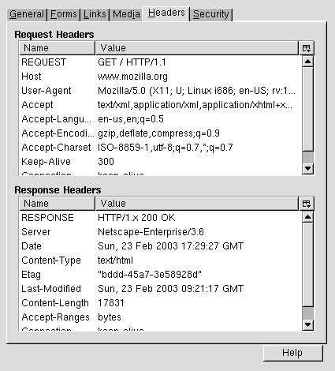
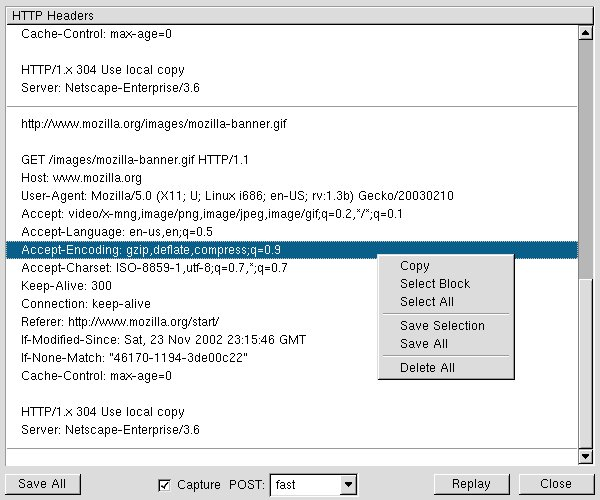
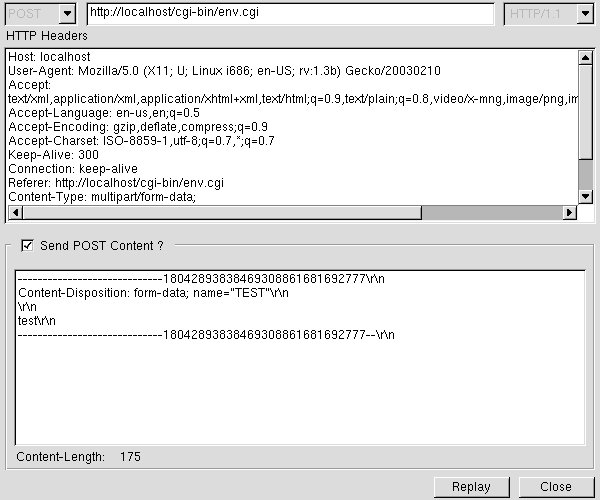
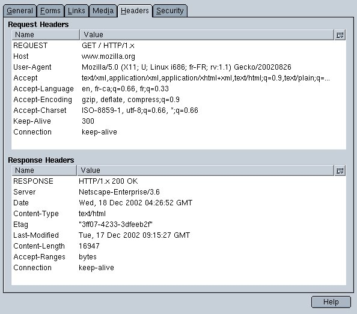
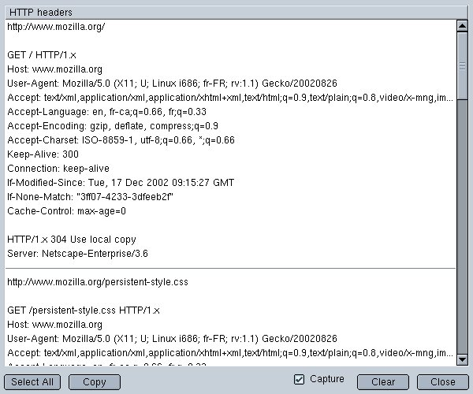

Here are some screen shots of LiveHTTPHeaders 0.4:
The Page Info Tab:

The Live HTTP Headers window (Tools -> Web Development menu):

Note: the Live HTTP Headers window show only HTTP request made while it is open.
Note: if you want to see POST content with FILE UPLOAD, you must choose 'accurate' in the POST list instead of 'fast'.
The Live HTTP Headers replay window (Replay button on the above window):

Note: you must not close the Live HTTP Headers to be able to replay.
Here are some screen shots of LiveHTTPHeaders 0.3:
The Page Info Tab:

The Live HTTP Headers window (Tools -> Web Development menu):

Note: the Live HTTP Headers window show only HTTP request made while it is open.
Note: if you want to see POST content with FILE UPLOAD, you must choose 'accurate' in the POST list instead of 'fast'.